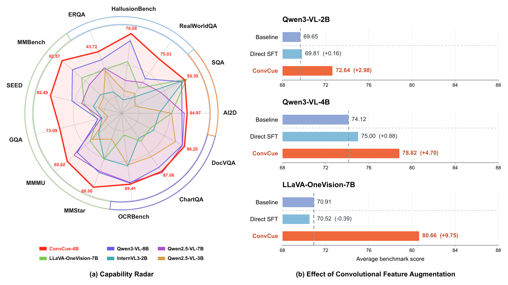

Zixuan (Ian) Lan
Research solves real problems
Hello! I'm an independent researcher. I received my Master's degree from the University of Chicago, where I worked with Professor Joe Zhou from Stony Brook University (life-long collaborator and advisor). My research focuses on improving model efficiency through algorithmic innovations and computer vision.
I currently work as an Algorithm Engineer on the AI team at a fintech company. My work focuses on macroeconomic and financial forecasting, spanning traditional time-series models, LLM-based forecasting, and simulation. Through my industry work, I have gained extensive hands-on experience in AI agent development and model training.
PhD Application Film1 minSelected research
2025 — 2026